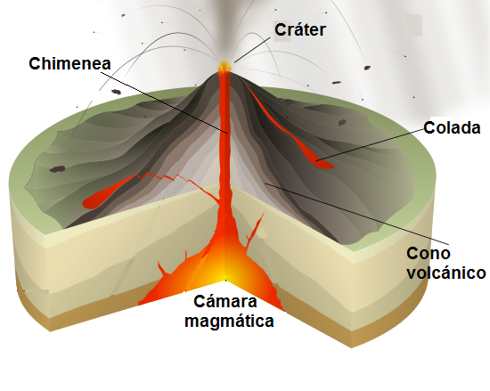
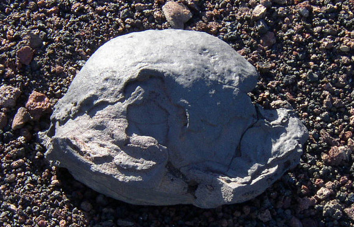
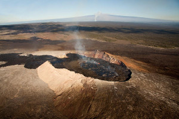
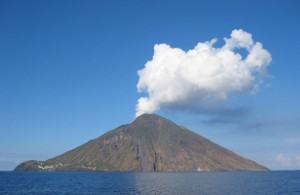
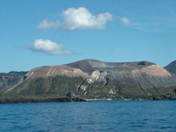
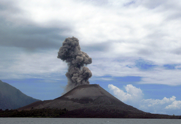

Volcán
Un volcán es una abertura en la superficie de la Tierra a través de la cual salen materiales que provienen del interior de la Tierra: el magma, es el nombre que reciben las masas de rocas fundidas del interior de la Tierra.
Por los volcanes no sólo sale el magma, conocido como lava, sino también ceniza volcánica y gases.
A través de los volcanes podemos conocer los materiales de la corteza terrestre por lo que son de gran interés para el estudio de estos materiales y del comportamiento del interior del planeta.
Estructura de un volcán
 |
| Estructura de un volcán |
En un volcán se pueden distinguir las siguientes partes:
-
Cráter: abertura de salida de los productos volcánicos.
-
Chimenea: conducto que une la cámara magmática con el exterior.
-
Cámara magmática: zona en el interior de la corteza terrestre donde se acumula el magma.
-
Cono volcánico: elevación del terreno producida por la acumulación de productos de erupciones volcánicas anteriores.
| Un volcán es una abertura en la superficie de la Tierra a través de la cual salen materiales que provienen del interior de la Tierra y en el que se distinguen el cráter, la chimenea, la cámara magmática y el cono volcánico. |
Nos ayudan a comprender el comportamiento del interior del planeta y la naturaleza y composición de la corteza terrestre.
Productos volcánicos
Los productos volcánicos son aquellos que salen del interior del volcán cuando entra en erupción. Éstos pueden ser:
-
Sólidos: se denominan piroclastos (que significa "piedras ardientes"). Su tamaño puede ser pequeño, como las cenizas volcánicas, medio, como el lapilli, o grande, como las bombas volcánicas. Son lanzados con violencia hacia el exterior gracias a la ayuda de los gases a gran temperatura que suben de la cámara magmática a través de la chimenea.
-
Fundidos: el conjunto de materiales fundidos que expulsa un volcán se denomina lava y al descender por el cono volcánico forma la colada de lava.
-
Gases: suelen ser vapor de agua y compuestos con contenido en azufre, que son tóxicos.
|
 |
|
Bomba volcánica |
Tipos de volcanes
Los volcanes que podemos encontrar pueden estar sobre el nivel del mar o bajo el mar.
Dependiendo del tipo de magma que desprende y del tipo de erupción se clasifican en 4 tipos:
|
TIPOS DE VOLCANES |
|
|
Tipo Hawaiano La lava es bastante fluida y no ocurren desprendimientos gaseosos explosivos. Estas lavas se desbordan cuando rebasan el cráter y forman corrientes que recorren grandes distancias antes de solidificarse. El volcán hawaiano más famoso es el Kilauea.  Kilauea |
Tipo Estromboliano Su nombre proviene del Estrómboli, volcán situado al norte de Sicilia. Sus erupciones son violentas y la lava es fluida, desprende gases abundantes y violentos con proyecciones de cenizas, bombas y lapilli. En la imagen, el volcán Stromboli.  Stromboli |
|
Tipo Vulcaniano Las erupciones son muy fuertes y desprenden grandes cantidades de gases. La lava es muy viscosa, solidificándose en la zona del cráter.  Vulcano |
Tipo Peleano Las erupciones son extraordinariamente violentas. La lava es muy viscosa, llegándose a obstruir la chimenea del volcán. Los gases se acumulan en la cámara magmática, incrementando la presión, por lo que termina explotando todo el cono volcánico. El más famoso de estos volcanes fue el situado en la isla de Krakatoa. Esta isla casi desapareció después de la erupción del volcán.  Hijo del Krakatoa |
Vídeo
En el siguiente video podrás ver los diferentes tipos de volcanes: